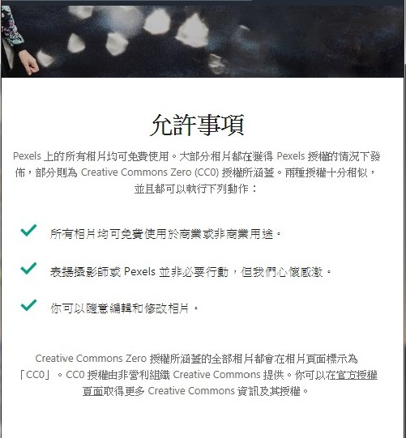

🐶相關資訊
- 連結至網界博覽會參賽作品網址首頁
- 專題研究計劃完成日期：2019年xx月xx日
- 學 校：新北市市立新北高工
- 縣 市：新北市土城區
- 指導老師：劉思吟 老師
- 參與此專題研究計劃的學生數：7位
- 同學們的年紀是：16-17歲
- 專題研究聯絡E-mail信箱 ：聯絡我們
🐱計畫總覽
一、 我們參加的競賽類別是：
地方環境議題
二、 我們的地方社區概述：
新北市的兩間動物之家， 分別位於中和區、板橋區 在裡面傳達了動物保護與尊重生命的理念，解決流浪動物造成的社會問題，也推廣流浪動物認養步驟和良好的寵物飼養常識和動保概念，專責執行動物保護及流浪犬收容管理等工作。
三、我們的專題內容概述：
流浪動物是甚麼? 是因為那些家貓、家狗，在原主人家中遭遇了某些問題，因而遭到棄養。 那些遭受到棄養的貓、狗，有的能夠在大風大雨中倖存下來，有的會藉由政府、民眾的通報，進到收容所讓其他人領養，得到更好的生活。
讓大眾明白TNVR的用意，T捉捕、N結紮、V施打疫苗、R原地放養。
四、我們的網際網路環境：
學校電腦的網路環境：
家中電腦的網路環境：
五、我們所遭遇與克服的難題：
成犬過於熱情，使我們躊躇不定，好險最後在工作人員的幫助下，我們成功走進拍攝。 路途遙遠，多虧同學家人才得以前往
六、心得箴言：
🐶計畫要素
壹、 你們從事本次網界博覽會專題研究計劃的研究與活動如何有助於你們的學校教學和課程需求？
升學上的輔助，例如：推甄
團體之間的互助、合作
與課程結合讓我們更了解如何製作網頁
貳、你們使用了那些資訊科技來完成你們的網界博覽會專題研究
| 名稱 | 用途 |
| Adobe photoshop、 Illustrator | 美工設計、圖像處理 |
| Google Chrome | 查詢資料 |
| Google 試算表 | 製作圖表 |
| Facebook Messenger | 群組溝通 |
叁、你們用什麼方法透過線上或個人接觸來扮演你們網界博覽會專題研究計劃「大使」或發言人角色？
我們透過實地採訪的方式，前往新北市的兩間動物之家，了解到流浪動物的處理跟照顧流程，讓我們可以使此簡報內容更加完善
肆、你們的專題研究計劃對你們產生了什麼樣的影響和衝擊？
參訪完動物之家後，才發現實際上和我們認知的不同，雖然知道有很多流浪貓狗，但親眼看到那個數量是非常驚人的。也了解了團隊合作的重要性，也了解推動動物保護在台灣的艱困
伍、專題網頁作品智慧財產權說明
| 使用部分 | 介紹 | 連結 |
| 貓、狗等素材圖片 | 本網站圖片皆可在網頁製作中使用 | pngimg 、pixabay |
| 背景圖 | 所有相片均可免費使用於商業或非商業用途。
 |
pexels |
| 採訪照片 | 自行前往 |
🐱貢獻表列
| 名字 | 負責部分 | 比例 |
| 李瑜庭 | ||
| 黃琳真 | ||
| 陳姍妮 | ||
| 林芯如 | ||
| 徐逢謙 | ||
| 黃駿笙 | ||
| 陳菁筌 |